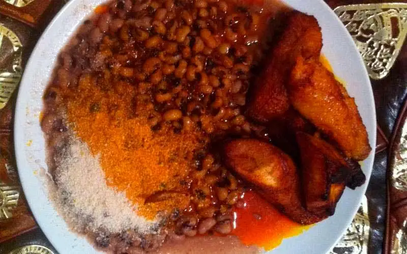

Red-Red a.k.a Gob3

Gob3: A legendary life saver
At the mention of the name red-red, one might think it’s
something else other than food. But it is actually one
of the best Ghana dishes. It’s simply a combination of
fried ripe plantain and beans sauce. This food is
enjoyed all over Ghana. It is not really a food
common only to a particular tribe or geographical area.
Many like it for its balanced nutritional value and
keeping one full for a much longer time. It is simply
prepared by frying the ripe plantain and preparing a
beans sauce.
Ingredients
- Plantain
- Beans
- Vegetable Oil
Steps in Preparation
-
To prepare the beans sauce, soak beans for some
hours or overnight in order to reduce cooking
time from 30 minutes to 15 minutes. Add enough
water to cover the beans in a saucepan and cook
until tender.
-
Then, slice onions and add Kpakposhito (pepper)
and fry in palm oil. Pour the beans into the
palm oil and simmer for 10 minutes. Serve it on
a plate and add the hot fried plantain. Some
choose to add gari, another local grain.
Food is ready!